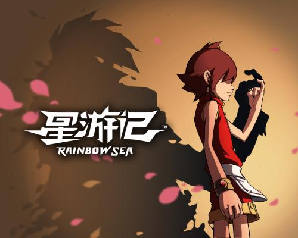
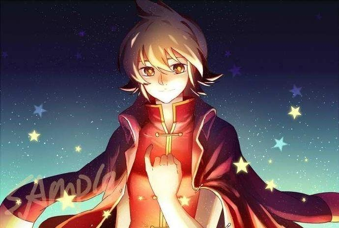
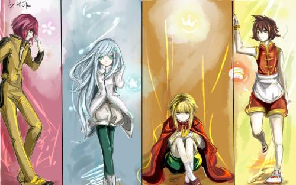
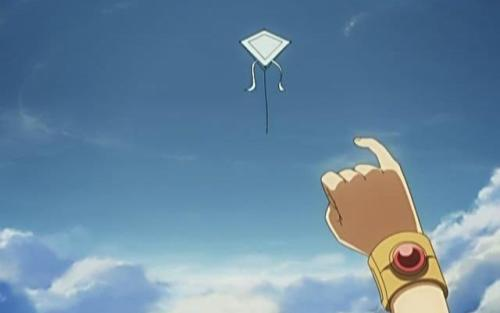

星游记 （2011年电动画制作动画）
《星游记》是由北京卡酷传媒有限公司于2011年10月30日出品的中国动画片
该片讲述了坚信奇迹的少年们出发前往太空深处的黑洞，寻找被全宇宙视为谎言的梦想之地彩虹海
曾经，一个身穿火红色衣服的男人向全宇宙宣称，黑洞的深处有一片被称之为彩虹海的奇迹之地，在那里宝石遍地，黄金在河里流淌，天空中横跨着上万种颜色的巨大彩虹，到达那里的人，可以实现自己的任何愿望。这一宣言点燃了全宇宙的热情，吸引着来自四面八方的人们，追随红衣男人飞向黑洞，最终却没有一个人能够回来，与冒险者一起消失的红衣男人麦林，被后人厌恶的称之为“红魔鬼”，彩虹海也被认为是有史以来最大的谎言。 若干年后，麦林的儿子——麦当在地球上成长为了一个少年，为了完成与父亲拉钩定下的约定，决心再次出发寻找那个被视为谎言的彩虹海。 为了到达彩虹海，麦当结识了已经毁灭的亚亚罗星球国王咕咚·萌西和太阳系最后一个星学家笛亚，为了进入可以到达存在彩虹海的巨型黑洞所在地哥罗星系，一起踏上了进入自然虫洞“魔鬼脚印”的旅途.
角色介绍
- 麦当:演员
- 配音 第一季：阎萌萌；风暴法米拉：陶典
- 红魔鬼麦林的儿子，是一名拥有彩虹石的“自由者”性格超级自信乐观，且体力超群，热爱美食（本身就是一名厨师）。还拥有思想单纯一根筋的天然呆性格，可同时还很热血，略显固执但是坚信正义的他总是勇往直前，毫无畏惧，不会顾虑太多，敢于迎接任何挑战。因父亲离家前与年幼时的他拉勾约定，因而坚持要前去彩虹海寻找父亲...
- 笛亚 演员 ---
- 配音 山新
- 著名星学会会长盖亚的孙女，星学会唯一幸存者，是彩虹石的自由者，守护着银河眼费尽心机寻找的神秘装置——“黄金魔方”。总是带着微笑的，其实有一段伤心的往事（自己的爸爸妈妈在给星际联盟送“黄金魔方”时，被银河眼的飞船射下，而身亡），让她一度忘记了怎么微笑，直到她遇到了火星上的面包圈马戏团……
- 咕咚·萌西 演员 ---
- 配音 第一季：郝幽玥；风暴法米拉：小连杀 亚亚罗星球的国王，外表非常萌（在没有变成兔子时，看模样是个正太），父母是居住在这个星球里，被人们奉为“英雄”的人，所以因父母的关系，被星球里掌握实权的大臣约士亚尊为“国王”，将王冠戴到了他的头上。 因是名誉国王，所以他也时常想让人们认可他的能力。后机缘巧合遇到了麦当，并愿意与他一同寻找“彩虹海”……
相信奇迹的人，本身就和奇迹一样了不起。
- 词条图片
- 精彩图集
- 星游记剧照
- 人物图片